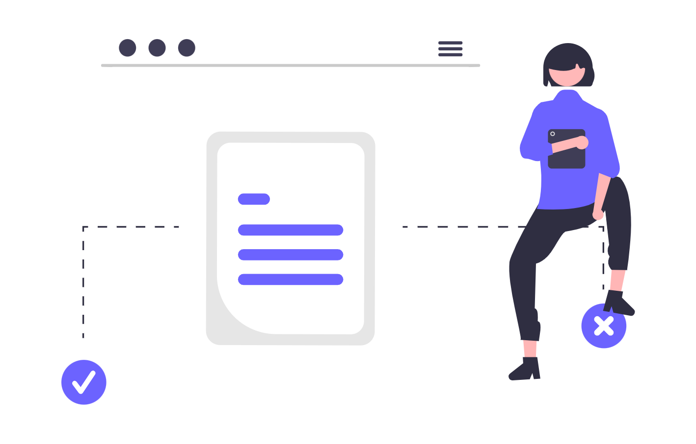
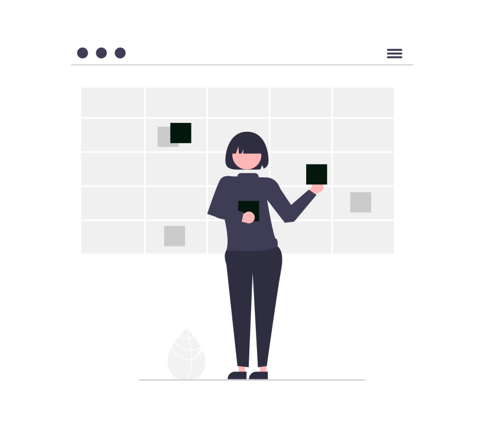

Verificarea manuală a portalului instanțelor de judecată reprezintă una dintre cele mai costisitoare și repetitive activități administrative din activitatea ta cotidiană. Trecerea la un sistem automatizat de interogare ECRIS și integrarea dosarului electronic îți protejează termenele de decădere, elimină erorile umane și eliberează zeci de ore lunar pentru munca juridică efectivă cu valoare adăugată ridicată.

Acest ghid analizează în profunzime funcționarea sistemului informatic judiciar românesc, calculează impactul financiar direct al sarcinilor administrative asupra profitabilității cabinetului și oferă o schemă pas cu pas pentru implementarea unui flux automatizat de colectare a datelor din instanțe.
1. De ce verificarea manuală pe Portal Just îți sabotează rentabilitatea
Dacă gestionezi un portofoliu activ de 40 până la 80 de dosare de litigii, verificarea stadiului procesual prin tastarea manuală a fiecărui număr de dosar pe portal.just.ro generează o pierdere silențioasă, dar masivă de resurse. În fiecare dimineață sau seară, tu sau colaboratorii tăi deschideți zeci de taburi de browser, introduceți numere de înregistrare, treceți peste erorile frecvente de conexiune ale serverelor Ministerului Justiției și copiați manual soluțiile pe scurt în fișiere Excel sau agende fizice.
Această abordare manuală generează trei vulnerabilități majore:
- Risc procedural sever: O soluție pronunțată cu amânare de pronunțare sau o modificare de termen nesesizată la timp poate duce la pierderea termenului de declarare a căilor de atac (apel sau recurs), atrăgând decăderea și răspunderea profesională.
- Cost de oportunitate ridicat: Fiecare oră consumată cu reîmprospătarea paginilor web este o oră pe care nu o poți factura clienților pentru redactare de cereri, consultanță strategică sau susținerea pledoariilor.
- Frecare operațională în echipă: Informația culeasă manual rămâne izolată pe stația celui care a făcut căutarea, creând asimetrie informațională între avocații titulari, asociați și stagiari.
Despre costurile ascunse generate de lipsa instrumentelor digitale am detaliat pe larg în analiza Cât te costă, de fapt, un cabinet de avocatură nedigitalizat?. Trecerea la monitorizarea automată nu este un lux tehnologic, ci un mecanism esențial de control al riscului operațional.
2. Anatomia tehnică a sistemului ECRIS și tranziția spre ECRIS 5
Sistemul informatic de evidență a activității instanțelor din România, denumit ECRIS (Electronic Case Registry Information System), gestionează întregul circuit documentar al cauzelor civile, penale și de contencios administrativ. Înțelegerea modului în care ECRIS stochează și expune datele te ajută să configurezi automatizări fiabile:
- Baza de date locală a instanței: Fiecare judecătorie, tribunal și curte de apel operează o instanță locală a sistemului, unde grefierii de ședință introduc părțile, obiectul cauzei, termenele acordate, actele depuse și minutele ședințelor.
- Sincronizarea cu serverul central: Serverul central al Ministerului Justiției colectează periodic aceste date locale și le publică în interfața publică
portal.just.roși prin serviciului web de interogare. - ECRIS 5 și arhitectura modernizată: Noul sistem ECRIS 5 vizează unificarea națională a fluxurilor, eliminarea disparităților regionale dintre curțile de apel și oferirea unei platforme centrale veritabile de dosar electronic, cu autentificare unică prin identitate digitală și acces securizat la încheieri și înscrisuri.
Când construiești un mecanism de monitorizare pentru cabinetul tău, sistemul tău interoghează aceste date publice sau semipublice și filtrează exclusiv evenimentele relevante pentru clienții din portofoliul tău.
3. Cum funcționează dosarul electronic în curțile de apel și tribunale
În prezent, accesul la dosarul electronic complet (adică nu doar la metadatele publice, ci la conținutul scanat al întâmpinărilor, concluziilor scrise, expertizelor și încheierilor de ședință) funcționează prin platforme regionale gestionate la nivelul Curților de Apel (precum platforma dezvoltată inițial de Curtea de Apel Cluj și extinsă ulterior la Curtea de Apel București și alte circumscripții).
Pentru a obține acces la dosarul electronic al cauzei, procedura presupune:
- Menționarea expresă a adresei de e-mail a avocatului și a numărului de telefon mobil în cererea de chemare în judecată sau în întâmpinare.
- Bifarea opțiunii de comunicare electronică a actelor de procedură conform art. 154 alin. (6) din Codul de procedură civilă.
- Primirea unei legături securizate de acces și a unui cod unic transmis prin SMS pe numărul avocatului împuternicit.
- Descărcarea documentelor în format PDF indexat.
Diferența critică dintre portalul general (portal.just.ro) și dosarul electronic regional constă în profunzimea informației: portalul oferă doar sumarul (părți, stadiu, soluție scurtă), în timp ce dosarul electronic conține înscrisurile integrale din dosar.
4. Calculul economic: ore facturabile versus ore administrative pe portal
Pentru a înțelege rentabilitatea unei investiții în automatizarea ECRIS, este util să facem un calcul matematic aplicat unui cabinet individual sau unei societăți civile de avocați cu 3 profesioniști:
Număr de dosare active în instanță: 60 dosare
Frecvența verificărilor necesare: De 2 ori pe săptămână
Timp mediu per verificare manuală (căutare, citire, notare): 2,5 minute
Timp săptămânal alocat verificărilor: 60 x 2 x 2,5 min = 300 minute (5 ore)
Timp lunar alocat verificărilor: 5 ore x 4 săptămâni = 20 ore
Tarif orar mediu de facturare: 75 EUR / oră
Valoarea orelor administrative lunare: 20 ore x 75 EUR = 1.500 EUR / lună
Într-un singur an calendaristic, un cabinet de talie medie consumă peste 240 de ore de lucru, echivalentul a 18.000 EUR, doar pentru a verifica pagini web ale instanțelor. La aceasta se adaugă costul indirect asociat stresului cauzat de teama de a nu omite o modificare de termen survenită intempestiv.
Dacă dorești să calculezi exact distribuția timpului în echipa ta, îți recomandăm ghidul despre Time tracking și măsurarea rentabilității dosarelor, unde explicăm cum să separi activitățile facturabile de cele administrative.
5. Arhitectura de monitorizare automată: API-uri, servicii web și parsare
O soluție digitală de monitorizare automată a portalului funcționează prin interogarea programatică a surselor oficiale. Spre deosebire de un utilizator uman, un algoritm software execută această verificare în fracțiuni de secundă, fără oboseală și fără omisiuni:
+-------------------------------------------------------------+
| Sistemul Judiciar ECRIS |
| (portal.just.ro / Web Service SOAP / REST) |
+-------------------------------------------------------------+
|
v
+-------------------------------------------------------------+
| Motorul de Colectare & Sincronizare |
| - Interogare automată programată (cron job) |
| - Comparare hash-uri de date pentru detecție modificări|
| - Filtrare dosare după număr unic național |
+-------------------------------------------------------------+
|
v
+-------------------------------------------------------------+
| Procesare & Distribuție Alerte |
| +-----------------------+ +--------------------------+ |
| | Alerte Notificări | | Sincronizare Calendar | |
| | (Email / Slack / | | (Google Calendar / | |
| | WhatsApp API) | | Microsoft Outlook) | |
| +-----------------------+ +--------------------------+ |
| |
| +-----------------------+ +--------------------------+ |
| | Actualizare CRM / | | Descărcare Documente | |
| | Fișă Internă Dosar | | Dosar Electronic | |
| +-----------------------+ +--------------------------+ |
+-------------------------------------------------------------+
Există două modalități principale de conectare:
- Web Service-ul oficial PortalJust: Ministerul Justiției oferă un serviciu web public de tip SOAP (
portalquery.just.ro/Query.asmx), prin care se pot extrage informații despre dosare, ședințe și părți pe baza numărului de dosar. Acesta este cel mai stabil canal, deoarece nu depinde de modificările vizuale de design ale paginii HTML. - Platforme LegalTech specializate: Servicii gata configurate care împachetează conexiunea cu ECRIS și oferă alerte automate, fără a necesita scrierea de cod propriu de către avocat.
Pentru cabinetele care doresc o integrare completă a fluxurilor interne, detaliem opțiunile în Digitalizarea cabinetului individual de avocat: ghid integral.
6. Sincronizarea termenelor de judecată cu Google Calendar și Outlook
Una dintre marile surse de eroare în practica avocațială este transcrierea manuală a termenului din portal în calendarul de birou. Un sistem automatizat rezolvă această problemă printr-o punte bidirecțională de date:
- Detectarea noului termen: Motorul de monitorizare interoghează baza de date și identifică o modificare în câmpul
Data ședințeipentru dosarul tău. - Crearea automată a evenimentului: Printr-o conexiune API securizată, sistemul creează o intrare în Google Calendar sau Microsoft Outlook Calendar.
- Completarea metadatelor esențiale: Titlul evenimentului include automat numărul de dosar, instanța și secția (de exemplu:
Dosar 1234/3/2026 - Trib. Buc. Secția a V-a Civilă - Termen Fond). - Calculul notificărilor preventive: Se configurează alerte automate la 7 zile, 3 zile și 24 de ore înainte de termen, permițând pregătirea din timp a notelor de ședință și a probatoriului.
Prin această legătură, calendarul devine o sursă unică de adevăr pentru toți avocații din cabinet, eliminând suprapunerile de ședințe și deplasările neplanificate.

7. Parsarea automată a soluțiilor pe scurt și a dispozitivelor
Soluția pe scurt redactată de grefier în ziua pronunțării conține informația critică pentru pașii următori: admiterea sau respingerea cererilor de probatorii, amânarea pronunțării sau dispozitivul hotărârii.
Sistemele avansate de automatizare nu se limitează la a trimite un simplu e-mail de notificare, ci aplică reguli de extragere a datelor:
- Detecția tipului de soluție: Identificarea automată a cuvintelor cheie (
amână judecata,admite în parte,respinge ca neîntemeiată,amână pronunțarea). - Calculul termenelor de atac: Dacă soluția conține mențiunea
Cu apel în termen de 30 de zile de la comunicare, un flux automatizat poate înregistra un task preventiv în sistemul de management al cauzelor, semnalizând echipei necesitatea monitorizării comunicării scrise a hotărârii motivate. - Trimiterea automată a unui sumar către client: În loc să compui manual un e-mail către client la sfârșitul fiecărei zile de instanță, un flux digital poate genera o notificare redactată profesional:
Vă informăm că în dosarul nr. [X], instanța a acordat termen la data de [Y] pentru administrarea probei testimoniale.
Acest salt de la informarea pasivă la acțiunea proactivă transformă percepția clientului asupra promptitudinii cabinetului tău.
8. Extragerea electronică a citațiilor și comunicărilor procedurale
Conform Codului de procedură civilă, citarea și comunicarea actelor se pot realiza prin mijloace electronice dacă partea sau reprezentantul său a indicat datele corespunzătoare instanței.
Automatizarea preluării acestor comunicări reduce vizibil birocrația de secretariat:
- Căsuță de e-mail dedicată procedurilor: Crearea unei adrese instituționale unice (de exemplu,
procedura@cabinet-avocat.ro) folosită exclusiv pentru relația cu instanțele și parchetele. - Confirmarea automată de primire: Sistemele pot genera automat recipisa de confirmare a primirii e-mailului expediat de grefă, îndeplinind cerințele procedurale de comunicare.
- Descărcarea și redenumirea automată a anexelor: Citațiile și încheierile primite în format PDF sunt salvate automat în folderul electronic al dosarului respectiv, primind o denumire standardizată (
2026-09-22_Citatie_Termen_2026-10-15.pdf).
Astfel, dosarul este complet la zi fără ca vreun membru al echipei să descarce manual atașamente din webmail.
9. Securitatea datelor și conformitatea GDPR în manipularea dosarelor
Digitalizarea fluxurilor de instanță implică prelucrarea unor categorii speciale de date cu caracter personal, inclusiv date privind condamnările penale sau date medicale în litigiile de daune ori malpraxis.
La implementarea oricărui sistem automatizat de extragere a datelor ECRIS, trebuie respectate standarde riguroase de confidențialitate:
- Criptarea datelor în repaus și în tranzit: Toate comunicările cu serverele externe trebuie să folosească protocoale criptate (
TLS 1.3), iar stocarea locală a dosarelor trebuie protejată prin criptare la nivel de disc. - Principiul minimizării datelor: Aplicația de monitorizare trebuie să interogheze și să stocheze exclusiv datele dosarelor în care cabinetul are împuternicire avocațială valabilă, nu întregul volum al ședințelor publice.
- Controlul accesului pe bază de roluri: Avocații colaboratori și personalul administrativ trebuie să aibă acces doar la dosarele alocate sarcinilor lor curente.
Pentru a aprofunda măsurile concrete de securitate necesare în infrastructura unui cabinet, consultă ghidul Zero Trust Security explicat pentru avocați.
10. Tabel comparativ: Soluții de monitorizare a dosarelor de instanță
Pentru a alege abordarea optimă pentru practica ta, e important să analizezi opțiunile disponibile pe piața din România:
| Criteriu de evaluare | Verificare manuală pe Portal Just | Scripturi interne / Scraper propriu | Platforme LegalTech dedicate (SaaS) |
|---|---|---|---|
| Cost financiar direct | 0 RON (aparent gratuit) | Cost inițial de dezvoltare mediu | Abonament lunar (150 - 600 RON/lună) |
| Cost real de timp lunar | 15 - 35 ore de lucru manual | 1 - 2 ore mentenanță tehnică | 0 ore (complet autonom) |
| Risc de eroare umană | Ridicat (omisiune la căutare) | Mediu (dacă se modifică structura portalului) | Minim (garanție SLA și mentenanță furnizor) |
| Sincronizare Calendar | Manuală (copy-paste individual) | Posibilă prin scripturi API | Automată nativă (Google & Outlook) |
| Notificări mobile / WhatsApp | Inexistente | Necesită configurare servere proprii | Disponibile nativ prin aplicație dedicată |
| Acces la documente scanate | Necesită logare separată pe Curți de Apel | Necesită logare token/SMS | Integrat parțial sau direct |
| Recomandare de utilizare | Cabinete cu sub 5 dosare active | Cabinete cu competențe tehnice interne avansate | Cabinete active și societăți de avocați |
Tabelul ilustrează clar de ce utilizarea unei soluții profesionale dedicate devine rentabilă încă din prima lună de la implementare, chiar și pentru un avocat care profesează individual.
11. Arhitectura recomandată a folderelor pentru dosarul electronic local
Automatizarea ECRIS nu este completă dacă documentele descărcate ajung într-un folder haotic de Downloads. Fiecare dosar de instanță trebuie să aibă o oglindă digitală structurată pe serverul securizat al cabinetului:
📁 Litigii_Active/
│
└── 📁 Dosar_1234_3_2026_Popescu_vs_Ionescu/
├── 📁 01_Acte_Procedurale_Initiale/
│ ├── Cerere_chemare_in_judecata_investita.pdf
│ ├── Imputernicire_avocatiala_semnata.pdf
│ └── Dovada_taxa_timbru.pdf
├── 📁 02_Inscrisuri_si_Probe/
│ ├── Contract_furnizare_2024.pdf
│ └── Corespondenta_notificari.pdf
├── 📁 03_Comunicari_Instanta_ECRIS/
│ ├── 2026-04-10_Citatie_Termen_Fond.pdf
│ └── 2026-05-18_Incheiere_Sedinta.pdf
├── 📁 04_Drafturi_si_Note_Sedinta/
│ ├── Note_probatorii_varianta_finala.docx
│ └── Concluzii_scrise.docx
└── 📁 05_Hotarari_si_Cai_Atac/
└── Sentinta_civila_motivata.pdf
Folosind această structură ierarhică, orice colaborator nou care intră pe dosar găsește istoricul complet al cauzei în mai puțin de două minute, iar sincronizarea automată cu portalul depune citațiile și încheierile direct în directorul 03_Comunicari_Instanta_ECRIS.
12. Greșeli frecvente în gestionarea dosarului electronic și riscuri procedurale
Tranziția către dosarul electronic și monitorizarea automată presupune atenție la câteva capcane practice des întâlnite în cabinetele de avocatură:
- Dependența exclusivă de portal fără verificare de control la arhivă: Portalul instanțelor are valoare strict informativă. Conform jurisprudenței constante, erorile de publicare de pe portal nu repun întotdeauna partea în termen dacă hotărârea sau citația a fost comunicată legal pe altă cale. Pentru actele decisive, verificarea dosarului fizic sau a dosarului electronic oficial rămâne obligatorie.
- Furnizarea unei adrese de e-mail generice neverificate frecvent: Dacă ai indicat instanței o adresă de e-mail pe care o accesezi rar, termenul curge de la momentul livrării mesajului pe serverul de primire, indiferent când ai deschis tu e-mailul.
- Ignorarea filtrelor de spam: Numeroase citații transmise automat de serverele curților de apel sunt direcționate în folderul de spam din cauza absenței semnăturilor digitale DKIM pe serverul expeditorului sau a filtrelor agresive ale căsuței tale.
- Lipsa unei copii de siguranță locale: Bazarea exclusivă pe platforma web a instanței este riscantă. Documentele din dosarul electronic trebuie descărcate periodic și stocate într-o copie de rezervă criptată în infrastructura cabinetului.
13. Checklist operațional pentru automatizarea ECRIS în cabinetul tău
Pentru a trece de la căutările manuale zilnice la un sistem automatizat funcțional, parcurge următorii pași practici:
- Pasul 1: Inventarierea dosarelor active: Centralizează într-un tabel numerele unice de dosar, instanța pe rolul căreia se află fiecare cauză și stadiul procesual actual.
- Pasul 2: Selectarea canalului de monitorizare: Decide dacă adopți o platformă LegalTech SaaS dedicată sau configurezi alerte prin API-ul oficial PortalJust.
- Pasul 3: Crearea adresei electronice unice pentru instanțe: Configurează o adresă instituțională (
ecris@cabinetul-tau.ro) și adaugă domeniile instanțelor în lista sigură (whitelist) a filtrelor de securitate. - Pasul 4: Conectarea la calendarul echipei: Asigură-te că alertele de termene noi populează automat calendarul partajat cu cel puțin 3 notificări prealabile.
- Pasul 5: Instruirea asistenților și a avocaților stagiari: Stabilește o procedură clară de operare: cine validează soluțiile descărcate și cum se arhivează încheierile în structura de foldere a cabinetului.
- Pasul 6: Audit lunar al dosarelor soluționate: Arhivează cauzele finalizate și retrage alertele pentru dosarele ieșite din portofoliu, menținând sistemul curat și rapid.
14. Concluzie
Automatizarea interacțiunii cu sistemul ECRIS și utilizarea profesionistă a dosarului electronic reprezintă o evoluție obligatorie pentru orice cabinet de avocatură care își propune să lucreze eficient, profitabil și fără riscuri procedurale inutile. Eliminarea căutărilor manuale pe portal economisește zeci de ore lunar, reduce drastic riscul omisiunii unui termen de recurs sau apel și ridică standardul de transparență față de clienți.
Ca în orice transformare digitală, există o curbă inițială de adaptare: este necesară reconfigurarea adreselor de corespondență din împuterniciri, acomodarea echipei cu alertele automate și verificarea riguroasă a filtrelor de securitate. Însă odată ce fluxul este stabilizat, câștigul de timp și liniștea profesională depășesc cu mult efortul inițial de configurare.
Dacă dorești să implementezi un sistem integrat de monitorizare ECRIS și gestiune a dosarului electronic pentru cabinetul tău, adaptat specificului practicii și echipei tale, echipa SOLON oferă consultanță de digitalizare și dezvoltare dedicată profesioniștilor din domeniul juridic.
Prezentul articol are un caracter pur informativ și educațional și nu constituie consultanță juridică în sensul Legii nr. 51/1995. Pentru asistență personalizată, vă recomandăm consultarea unui avocat specializat.